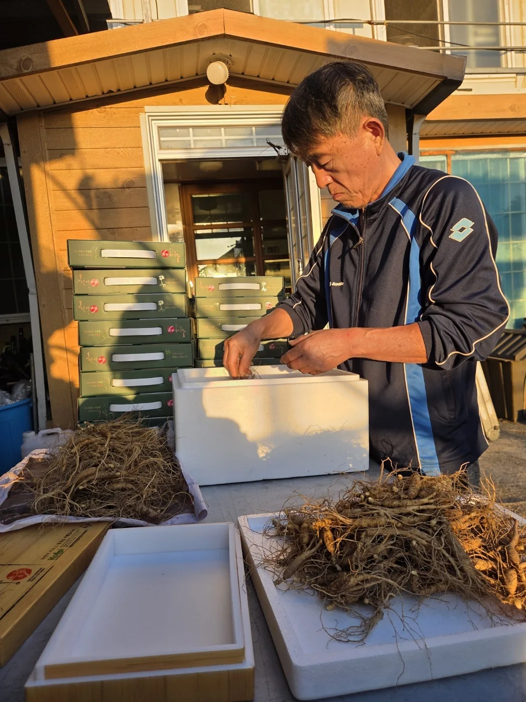

농림부 신지식농업인 선정
농업 현장의 새로운 경영과 기술을 실천해 온 농업인으로 선정되었습니다.
경남 함양, 지리산 마적대에서 산양삼을 재배하는 농원입니다.

강재두 대표는 양돈 협업경영과 흑돼지 브랜드 개발에서 출발해 산양삼 재배로 농업의 길을 이어왔습니다.
농업 현장의 새로운 경영과 기술을 실천해 온 농업인으로 선정되었습니다.
양돈 분야의 협업경영과 브랜드 개발 등 농업 활동을 이어왔습니다.
신지식농업인 활동을 이어가며 산양삼 재배 현장을 알렸습니다.
함양의 산자락에서 산양삼 원물을 재배하고 고객에게 소개합니다.
주요 이력은 언론 보도 및 제공된 자료를 바탕으로 정리했습니다. 관련 보도 확인 ↗